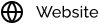
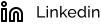
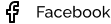
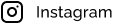

DESCRIÇÃO DA VAGA
O next é uma plataforma digital com produtos e serviços que facilitam a vida dos clientes. Acreditamos na inovação constante para seguirmos melhorando todos os dias, construindo um ambiente que permite que todos se tornem as melhores versões de si. Nosso
propósito é conectar pessoas e sonhos para um mundo mais próspero!
RESPONSABILIDADES E ATRIBUIÇÕES
- Mentorar outros designers para contribuir com o crescimento do time e fomentar o espírito colaborativo;
- Trabalhar em parceria com os demais designers do time para estabelecer padrões e boas práticas em alta escala, prezando pela qualidade do design;
- Trabalhar em parceria com as demais áreas do next como: negócio, tecnologia e analytics, em atividades de pesquisa, sessões estratégicas, ideações, design e teste de conceito de novos produtos;
- Planejar e conduzir descobertas a fim de identificar e mapear oportunidades e dores relevantes dos nossos usuários e clientes;
- Propor e participar da experimentação de hipóteses e conceitos, validando-os por meio de pesquisa com usuários, testes de usabilidade ou outros métodos de validação;
- Construir e melhorar experiências que estejam conectadas com objetivos de negócio e necessidades dos nossos clientes e consumidores;
- Definir novas jornadas; criar interfaces usando nosso Design System; criar protótipos de baixa, média e alta fidelidade quando preciso, realizando o handoff e acompanhando sua implementação.
REQUISITOS E QUALIFICAÇÕES
O que buscamos em você?
- Ensino superior em andamento ou completo;
- Experiência com liderança de projetos e/ou pessoas em Design de Produto;
- Experiência com criação de wireframes e protótipos utilizando ferramentas de design, como Figma e Sketch;
- Vivência como Designer de Produto ou UX/UI Designer;
- Capacidade de mergulhar em um problema, encontrar soluções rápidas para resolvê-lo e planejar as melhorias para versões futuras;
- Portfólio que reflete suas habilidades como designer.
INFORMAÇÕES ADICIONAIS
O que o next te oferece?
- Modelo de trabalho híbrido
- Participação nos Lucros (PLR)
- Vale Alimentação e Vale Refeição
- 13º de Vale Alimentação
- Assistência Médica e Odontológica
- Seguro de Vida
- Previdência Privada
- Vale Transporte
- Unibrad Universidade Corporativa Bradesco
- Amplo programa de desenvolvimento e atualizações
- Convênios que geram descontos em cursos externos, academias de ginástica, studios de pilates de ioga e condições exclusivas nos produtos e serviços da Organização.
- Nossas vagas são direcionadas para as pessoas que querem fazer acontecer. Aqui, respeitamos e acolhemos pessoas com deficiência, as diferentes expressões religiosas, a comunidade LGBTQIA+, raças e etnias, nacionalidades, ascendências e
idades diversas, pois acreditamos que a diversidade é base para a inovação contínua.
A PLATAFORMA DIGITAL QUE TE AJUDA A ACONTECER
O next tem como propósito conectar pessoas e sonhos para um mundo mais próspero. Por aqui, estimulamos a troca de ideias e o crescimento pessoal e profissional de nossos funcionários. E seguimos juntos na missão de facilitar a vida de nossos
clientes por meio de uma plataforma digital com serviços financeiros - cartão de crédito e débito, investimentos, empréstimos, seguros – e não financeiros, como o nextShop, o marketplace do next.
Diversas formas de ser
Somos o resultado da união de diversas formas de ser e fazer acontecer. Acreditamos no poder da diversidade e na conexão entre todas as áreas do next para construir um ambiente de trabalho plural e inclusivo, levando oportunidades
iguais a todos. Incentivamos a colaboração e o compartilhamento das diversas visões e opiniões para seguirmos evoluindo e aprendendo uns com os outros.
Vamos, juntos, simplificar a vida das pessoas e fazer acontecer?
ACOMPANHE A GENTE



